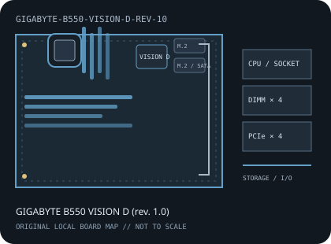

[ INDIVIDUAL COMPONENT // MOTHERBOARDS ]
GIGABYTE B550 VISION D (rev. 1.0)
AMD Socket AM4 / AMD B550, ATX, 305 × 244 mm, 2020. This record identifies the exact model and revision scope below.

REVISION WARNING: Verify the full model name and PCB revision silkscreen before fitting a CPU, selecting memory, or applying firmware. Similar names and revisions may use different support files.
Specifications
| Catalog subcategory | AMD Socket platforms |
|---|---|
| Board / revision covered | PCB revision 1.0 only; GIGABYTE's revision-specific support page must be used for its manual, CPU list and firmware. |
| Socket and chipset | AMD Socket AM4 / AMD B550 |
| Form factor | ATX, 305 × 244 mm |
| Memory | Four dual-channel DDR4 DIMM sockets, up to 128 GB; ECC UDIMM operation and rated speed depend on CPU and BIOS. |
| CPU and BIOS support | Ryzen 3000 desktop, 3000/4000 G-Series and 5000-series processors listed for rev. 1.0; select the exact CPU and minimum BIOS from GIGABYTE's revision-specific support list. |
| Expansion | Three PCIe x16-length slots; CPU-connected lanes support x16 or split configurations, while the chipset slot operates at up to x4. Check the manual for CPU-dependent generations and lane sharing. |
| Storage | Two M.2 sockets with PCIe/SATA modes listed by GIGABYTE and four SATA 6 Gb/s ports; use the storage-sharing table before populating drives. |
| Rear I/O and connectivity | Dual Thunderbolt 3 USB-C, USB Type-A, HDMI, dual Intel Gigabit Ethernet, Wi-Fi 6 antenna connectors and multi-channel audio. Display output and Thunderbolt video paths depend on source configuration. |
Compatibility and revision notes
This record is for B550 VISION D revision 1.0, not another revision or sibling Vision model. Confirm CPU BIOS, expansion-lane split, memory QVL and Thunderbolt requirements in rev. 1.0 documents.
Socket, connector shape and chipset branding alone do not establish compatibility. Check the exact board revision, CPU support table, minimum BIOS, memory population rules, power connectors, case clearance and lane-sharing details in the cited documents.
Preservation and repair
Check Thunderbolt Type-C connectors, Wi-Fi antenna jacks, M.2 heatsinks and the exact rev. 1.0 silkscreen; do not apply files from another PCB revision.
For archival preservation, record PCB revision, serial/date codes, installed firmware, known faults, repairs and test conditions. Use ESD-safe handling and do not power a board with loose conductive hardware beneath it.
Manufacturer sources
- GIGABYTE B550 VISION D rev. 1.0 specificationsRevision-specific manufacturer specifications and interface tables.
- GIGABYTE B550 VISION D rev. 1.0 manuals and downloadsOfficial manual for installation, lane sharing and firmware.
- GIGABYTE B550 VISION D rev. 1.0 CPU supportUse the revision-specific CPU support list and minimum BIOS.
Manufacturer specifications, manuals and support lists are authoritative for the physical board; use only revision-matched firmware.